Takamatsu, Kagawa: things to do, food and stays
Takamatsu · Kagawa
Takamatsu
Highlighted on the Kagawa map.

Stay
夕凪の湯HOTEL花樹海
Yunagi No Yu HOTEL Hana Jukai
JRホテルクレメント高松
JR Hotel Kuremento Takamatsu
Hotel in Hamano, Takamatsu; 1-minute walk from Jrtakamatsu Station.
THE CHELSEA BREATH（ザ・チェルシー・ブレス）
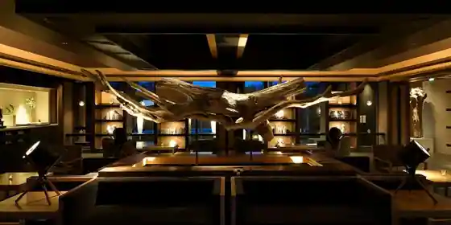
THE CHELSEA BREATH(Za Cherushi Buresu)
ロイヤルパークホテル高松
Roiyaru Park Hotel Takamatsu
JRクレメントイン高松
JR Kurementoin Takamatsu
Inn in Hamano, Takamatsu; 7-minute walk from Jrtakamatsu Station.
オーベルジュ ドゥ オオイシ
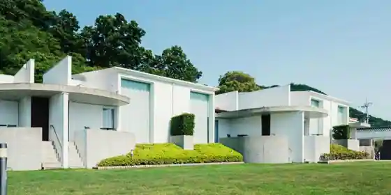
Oberuju Dou Oishi
Inn in Yashimanishi, Takamatsu with scenic views.
ダイワロイネットホテル高松
Daiwaroinetto Hotel Takamatsu
Hotel in Marugame, Takamatsu with parking and business travelers.
コンフォートホテル高松
Comfort Hotel Takamatsu
天然温泉 玉藻の湯 ドーミーイン高松中央公園前
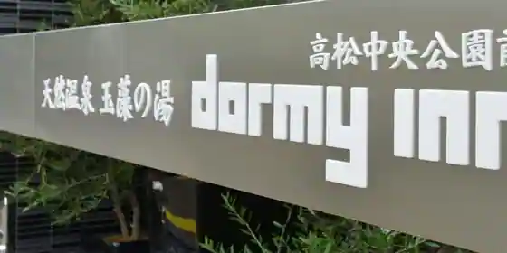
Tennen Onsen Tamamo No Yu Dormy Inn Takamatsu Chuo Koenmae
Inn in Tenjinmae, Takamatsu with a large communal bath and business travelers.
JRクレメントイン高松兵庫町
JR Kurementoin Takamatsu Hyogo Machi
Inn in Hyogo, Takamatsu; 7-minute walk from Jrtakamatsu Station.
高松パークホテル
Takamatsu Park Hotel
さぬきの湯 ドーミーイン高松
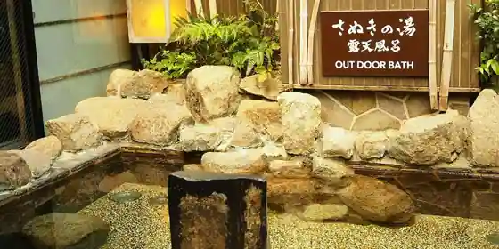
Sanukino Yu Dormy Inn Takamatsu
Inn in Kawara, Takamatsu with a sauna and a large communal bath.
Dining
両忘
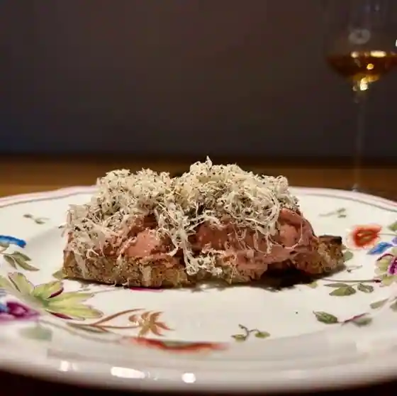
Ryo Bo
寿司 中川
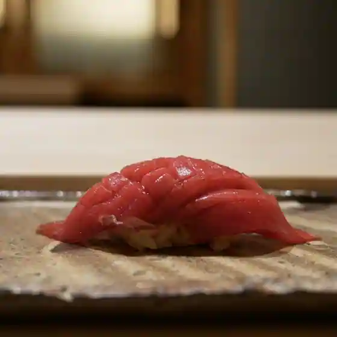
Sushi Nakagawa
おうどん 瀬戸晴れ
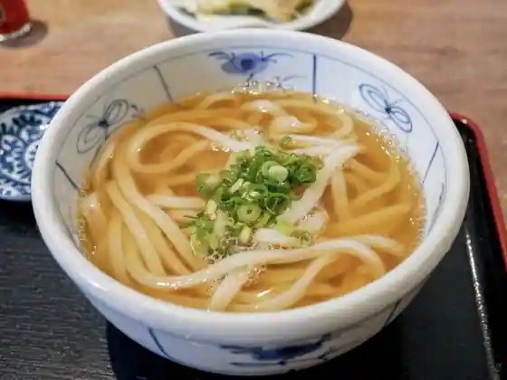
Oto N Seto Hare
ふる里うどん
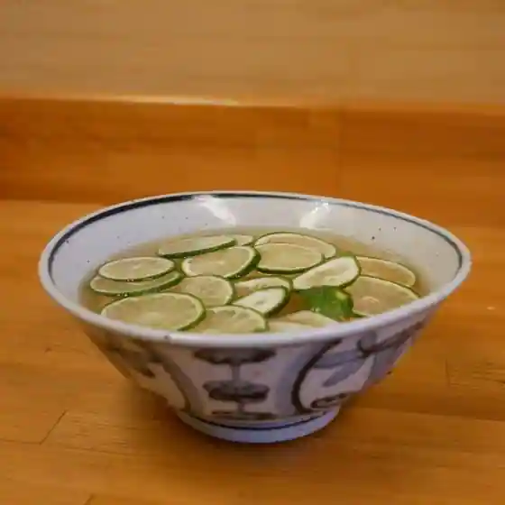
Furu Sato Udon
小料理 Yarn
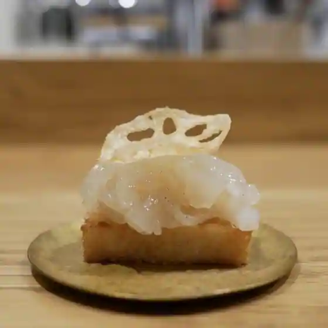
Koryori Yarn
鮨舳
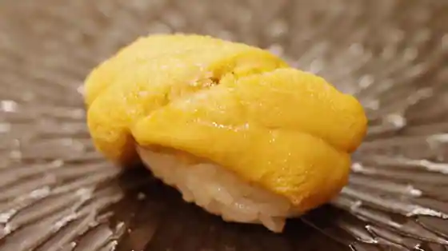
Sushi Hesaki
手打うどん はりや
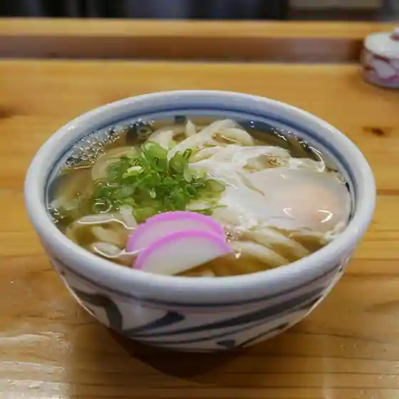
Teuchi Udon Hariya
手打ちうどんますや
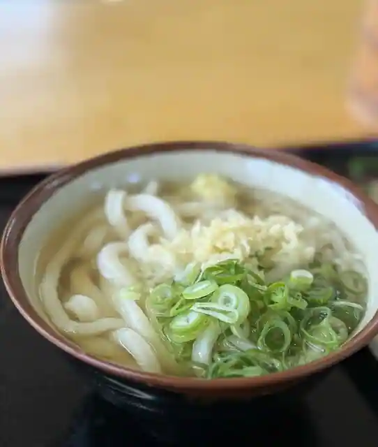
Teuchi Chiudonmasuya
本格手打 もり家 高松シンボルタワー店
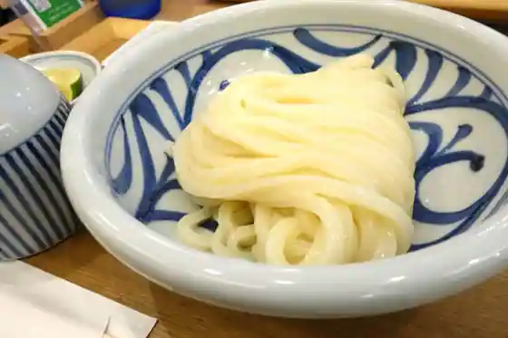
Honkaku Teuchi Mori Ie Takamatsu Shinborutawa
手打十段 うどんバカ一代
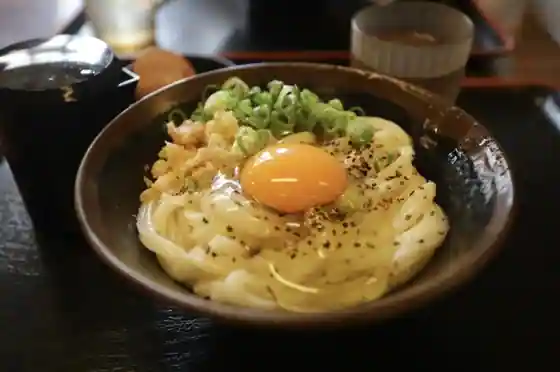
Teuchi Ju Dan Udon Baka Ichidai
うどん さか枝
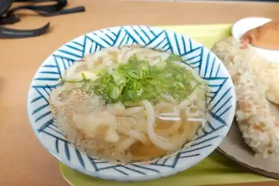
Udon Saka Eda
うどん 一福
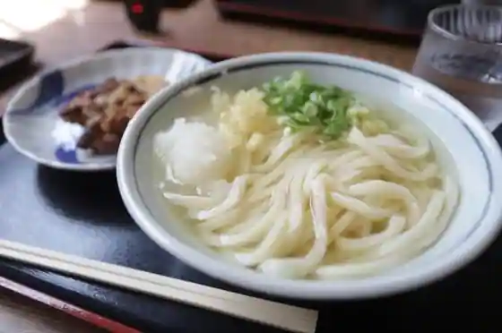
Udon Ichi Fuku
讃岐うどん 上原屋本店
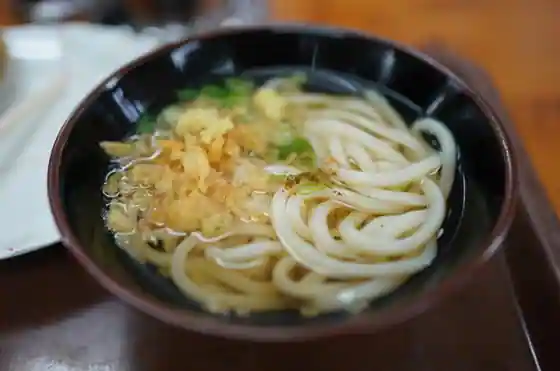
Sanuki Udon Uehara Ya Hon
中西うどん
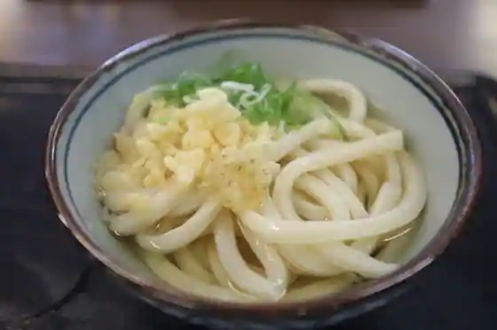
Nakanishi Udon
手打うどん 麦蔵
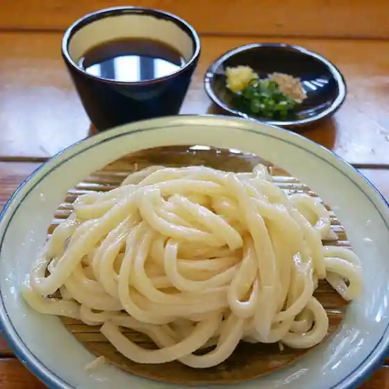
Teuchi Udon Mugi Kura
本格手打 もり家
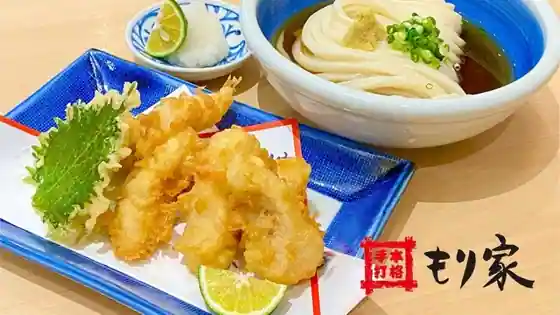
Honkaku Teuchi Mori Ie
宮武うどん
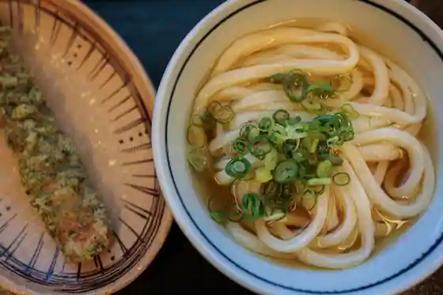
Miyatake Udon
うつ海うどん
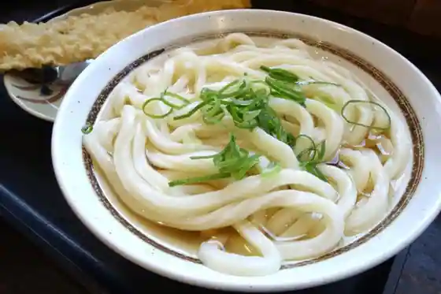
Utsu Umi Udon
手打ちうどん 鶴丸
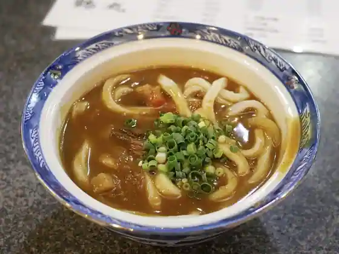
Teuchi Chiudon Tsurumaru
大島うどん
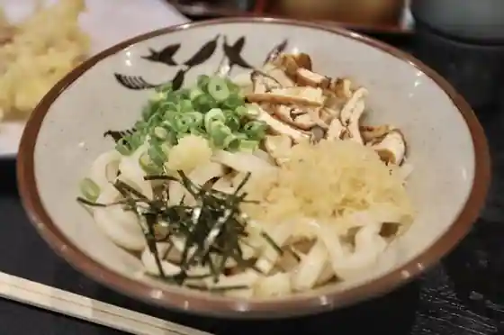
Oshima Udon
松下製麺所
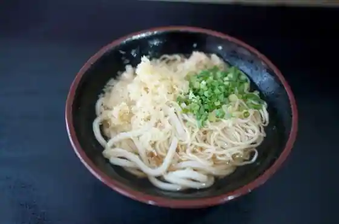
Matsushitasei Men Tokoro
ざいごうどん 本家 わら家
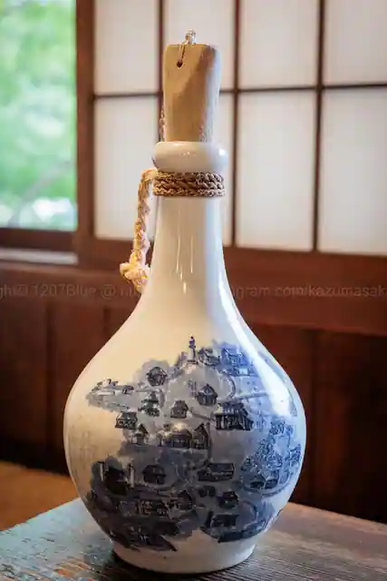
Zaigodon Honke Wara Ie
手打ちうどん ひさ枝
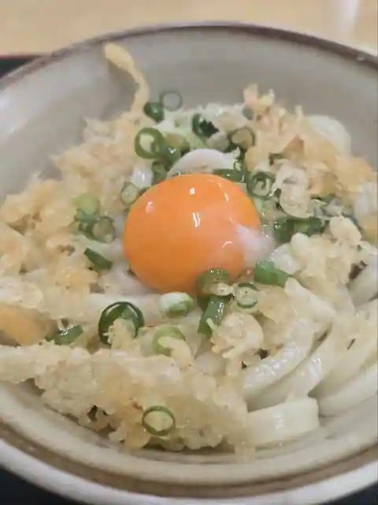
Teuchi Chiudon Hisa Eda
手打うどん 三徳
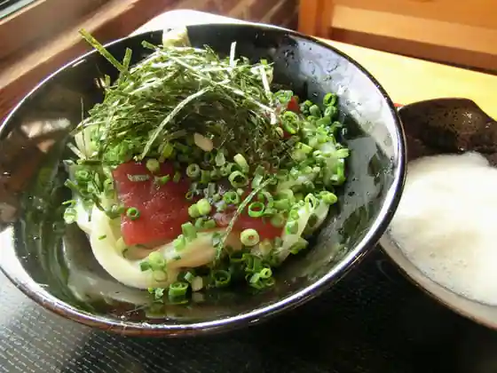
Teuchi Udon Santoku
Sights
Kuribayashi Park
Kangetsu Bridge at Ritsurin Garden, Special Place of Scenic Beauty, Takamatsu
Takamatsu Shiro (Tamamo Park)
Takamatsu Castle (Tamamo Park), Takamatsu

Ya Shima
Yashima plateau, Takamatsu

Ya Shima Tera
Yashima-ji, Shikoku pilgrimage temple 84, Takamatsu

Megi Shima
Megijima island, Takamatsu